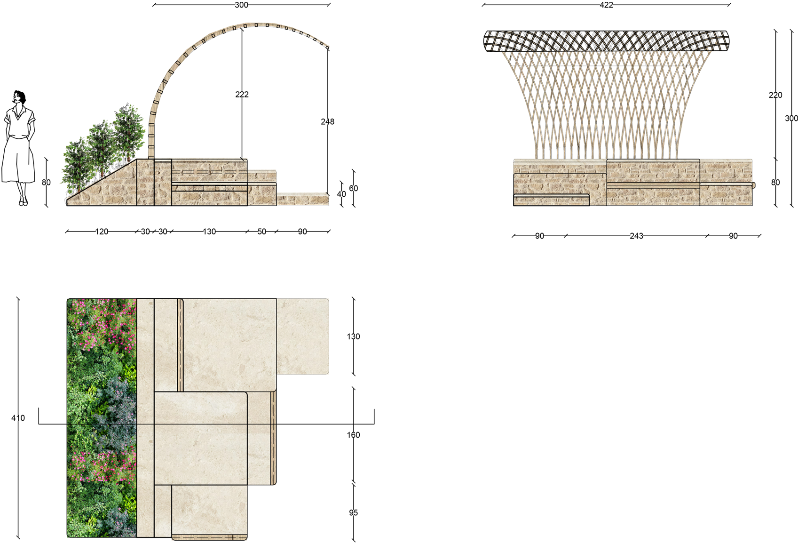
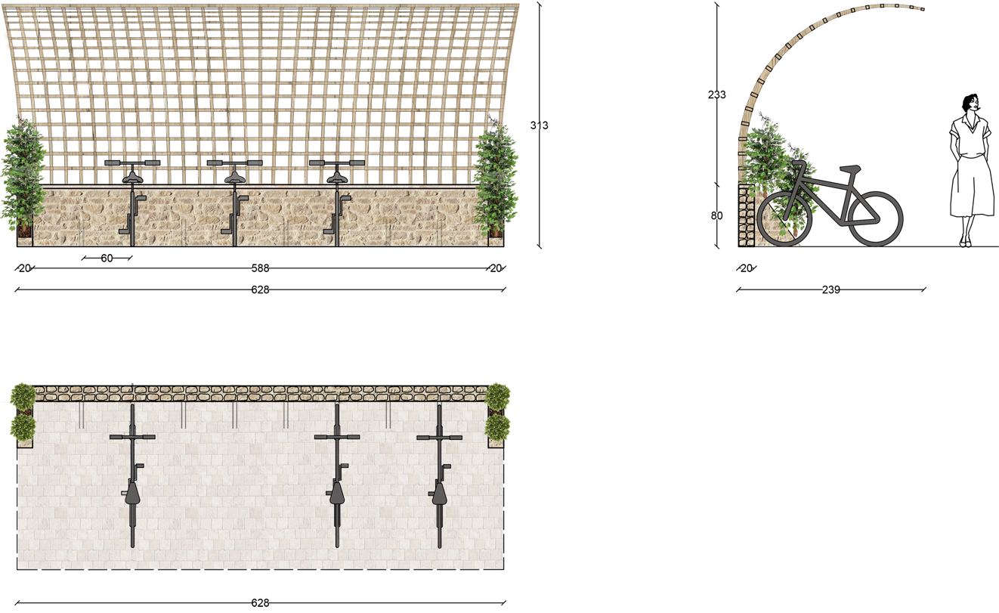
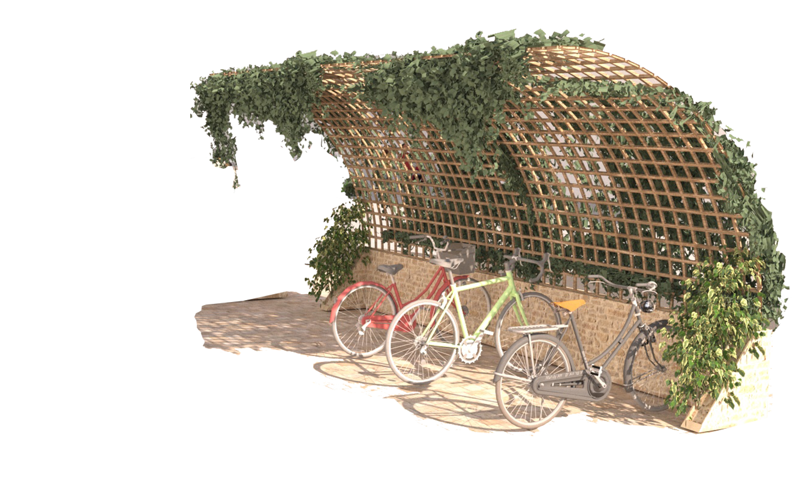

Plan d’un module de mobilier

Visuel 3D

Plan de l’abris vélo

Visuel 3D
Ce projet, mené en partenariat avec la mairie du 13e arrondissement de Paris, s’inscrit dans une réflexion sur la mémoire du lieu et l’identité du quartier.
Il cherche à faire renaître le souvenir d’un Paris d’autrefois — celui des prairies, des champs et des rus qui traversaient autrefois cette partie du territoire. L’objectif est d’infuser une dimension poétique dans le projet, en créant un espace à la fois propice à la détente, à la contemplation de l’environnement et à la réflexion. Des citations de Victor Hugo sont intégrées au mobilier, faisant écho aux pages des Misérables où l’auteur décrit avec sensibilité le Paris de son époque, ses paysages et ses métamorphoses.
Dès l’entrée sur la place, l’ambiance se veut naturelle et immersive. Les pentes verdoyantes, plantées d’une végétation atteignant jusqu’à deux mètres de hauteur, offrent un relief doux et enveloppant, évoquant la richesse et la vitalité du paysage originel
L’aménagement s’organise en deux parties : l’une, plus intime, pensée pour les lycéens du lycée voisin, ; l’autre, ouverte à l’ensemble des habitants, afin de favoriser la rencontre tout en préservant la quiétude du lieu. Des rus accompagnent les cheminements et guident le passant dans sa traversée, invitant à une expérience sensorielle et apaisante.
Le mobilier s’inspire des architectures rurales et des ruines anciennes : murets en pierre apparente et assises en pierre de taille traduisent une volonté de durabilité et d’ancrage dans la mémoire du territoire.
Image concept du projet
"Prendre le temps d’observer, c’est s’enrichir de milles détails qui échappent à celui qui court sans regarder"
Auteur inconnu
Plan d’un module de mobilier
Visuel 3D
Plan de l’abris vélo
Visuel 3D

Visuel 3D
Floraison de mai à septembre et aime être en plein soleil. Elle nécéssite un sol poreux, sec et frais et peu d'arrosage.
Floraison de juillet à novembre, préfère les fortes chaleurs. Requiert un sol argileux et un arrosage hebdomadaire.
Floraison printanière, soleil partiel. Solriche et bien drainé, arrosage hebdomadaire. Résiste à des températures allant de 5 à 32°C.
Plante persistante. Soleil partiel et résiste à -12 °C sol bien drainé, humifère et frais. Arroser en cas de fortes chaleurs.
Plante persisatnte. Floraison en mai-juin, soleil ou mi-ombre. Résiste au froid et nécessite un sol fertile et bien drainé. Hauteur pouvant aller jusqu’à 2m.
Plante peristante. Floraison d’avril à septembre, soleil partiel. Résistante aux intempéries. Sol sec, enrichi en compost. Un arrosage abondant par temps chaud.
Floraison printanière, soleil partiel. Sol bien drainé, arrosage hebdomadaire. Elles mesurent en moyenne 30cm.
Floraison de mai à juin, soleil et à l’abris du vent. Résistante aux faibles températures. Sol bien drainé sans humidité stagnante. Un arrosage hebdomadaire et une hauteur pouvant aller jusqu’à 1,5m.
Pierre provenant de la carrière de saint Maximin, carrière d’où proviennent les pierres des bâtiments Haussmanniens.

Pierre de taille provenant également de la carrière de saint Maximin.
Bois local, résiste naturellement aux intempéries. Sa durabilité sans traitement en fait une option éco-responsable pour le mobilier extérieur.
Pavés en calcaire pour le cours d’eau. Sa roche poreuse permet de drainer l’eau. Ils permettent également de résister aux intempéries et se nettoie facilement.